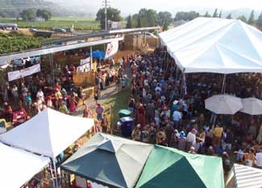

So you’ve heard the good word about alternative energy and green building, and you’re ready to make the switch - right? Whether you’re ready to build or remodel your home to make it green, or just want to learn about renewable energy systems, there may be no better resource than the Solar Living Institute (SLI) in Hopland, Calif.
Since 1998, the Institute has welcomed thousands of people to workshops, festivals, lectures and celebrations with the mission “to promote sustainable living through inspirational environmental education.” The Institute has gone a long way toward helping our culture unhook from the IV of fossil fuels and soak up the joy of solar living instead. The eager learners are playing an important role in a renewable future, and whether or not you live in California, the Institute can help you join that movement.
Here’s just a taste of the wide variety of topics covered in the Institute’s year-round (and affordable - most are $100 to $200) workshops:
View the full list of 2008 workshops here.
The Institute is perhaps best-known for SolFest, its tremendous annual summer gathering in celebration of renewable energy and sustainability. There’s a lot to be learned here, too, but the two-day festival also fulfills the official mission “to always remember to have fun in whatever we are doing.”
And it’s hard not to have a good time at this gorgeous 12-acre spread in northern California. In addition to inspiring speakers (Hunter Lovins, Ed Begley, Jr., Jim Hightower and Amy Goodman have headlined in past years) and a jam-packed schedule of workshops, you can enjoy excellent food (organic garlic cheese fries, fresh squeezed ginger lemonade, vegan pie), live music (David Grisman, Dar Williams, Leftover Salmon and Hot Buttered Rum have performed in past years), and even 100 percent organic beer from just up the road (Ukiah Brewing Co.).
This year’s Solfest will be held on August 16th and 17th; click here for more info. Tickets are $30 for Saturday, $25 for Sunday, or $45 for both action-packed festival days. (And don’t forget to visit us at the Mother Earth News booth!)
Besides the workshops and events, you might be interested in these other offerings from the Solar Living Institute:
|
 COURTESY SOLAR LIVING INSTITUTE SolFest, an annual event with speakers, workshops, music and more will be held at the Solar Living Institute August 16-17, 2008. |
|
|